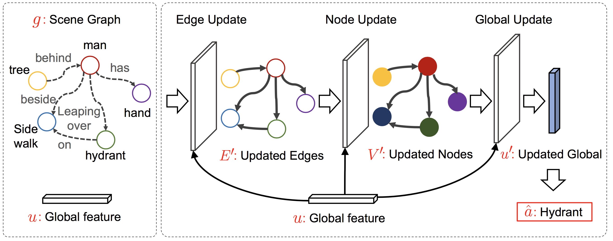

Publications
|  |
[BMVC'19]
An Empirical Study on Leveraging Scene Graphs for Visual Question Answering Cheng Zhang, Wei-Lun Chao, Dong Xuan British Machine Vision Conference, 2019 (Oral: 38/815=4.6%) Paper Codes Slides Poster |

|
[INFOCOM'18]
MV-Sports: A Motion and Vision Sensor Integration-Based Sports Analysis System Cheng Zhang, Fan Yang, Gang Li, Qiang Zhai, Yi Jiang, Dong Xuan IEEE International Conference on Computer Communications, 2018 (308/1606=19%) Paper Project Slides |

|
[UbiComp'18]
Third-Eye: A Mobilephone-Enabled Crowdsensing System for Air Quality Monitoring Liang Liu, Wu Liu, Yu Zheng, Huadong Ma, Cheng Zhang ACM International Joint Conference on Pervasive and Ubiquitous Computing, 2018 Paper iOS APP Android APP |
 |
[ICASSP'16]
Siamese Neural Network based Gait Recognition for Human Identification Cheng Zhang, Wu Liu, Huadong Ma, Huiyuan Fu IEEE International Conference on Acoustics, Speech and Signal Processing, 2016 Paper Codes Slides Poster |